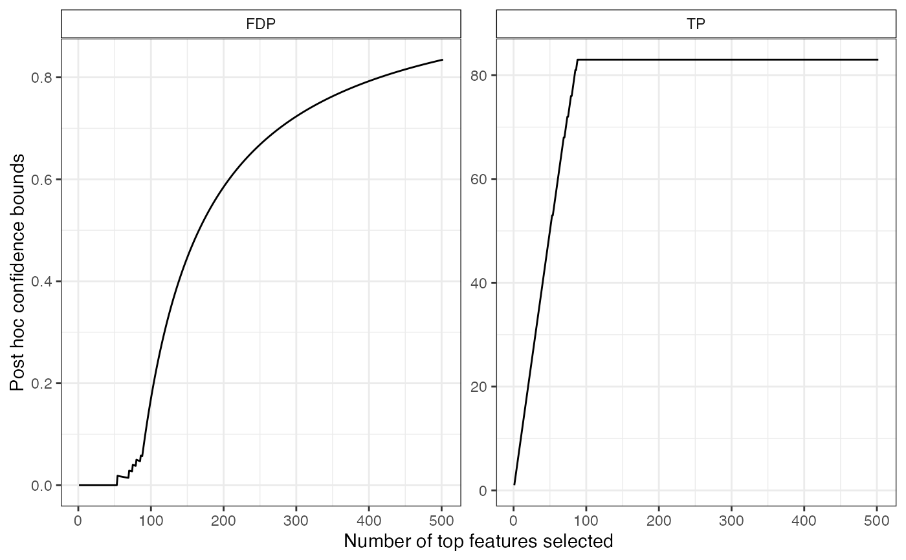
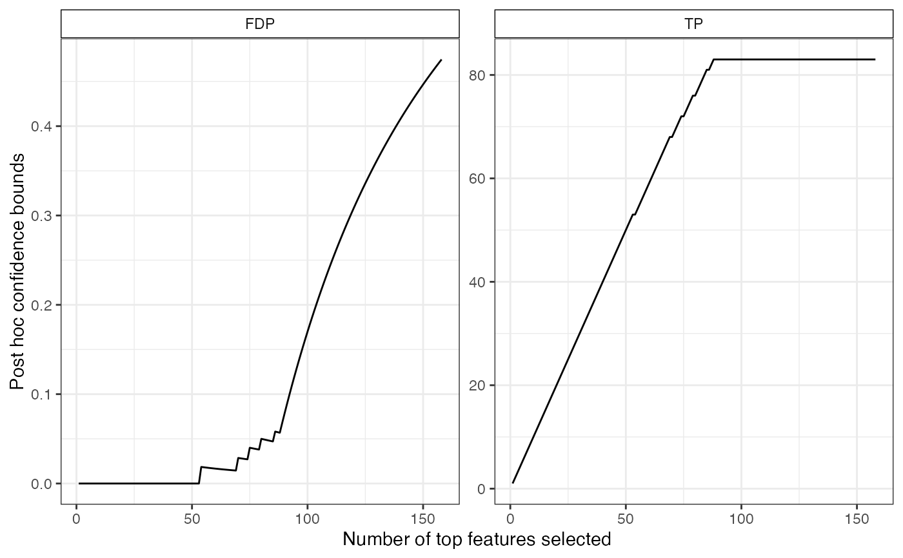
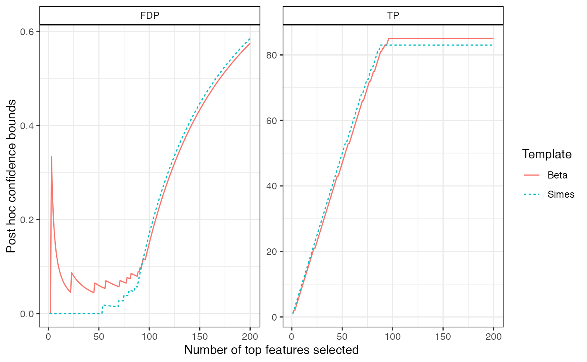

R/SansSouci-class.R
predict.SansSouci.RdPost hoc confidence bounds on the true/false positives
# S3 method for SansSouci predict( object, S = seq_len(nHyp(object)), what = c("TP", "FDP"), all = FALSE, ... )
| object | An object of class 'SansSouci' |
|---|---|
| S | A subset of indices |
| what | A character vector, the names of the post hoc bounds to be computed, among:
Defaults to |
| all | A logical value: should the bounds for all ordered subsets of |
| ... | Not used |
If all is FALSE (the default), only the value of the bound is returned. Otherwise, a data.frame is return, with |S| rows and 4 columns:
x: Number of most significant items selected
label: Label for the procedure, typically of the form 'family(param)'
bound: Value of the post hoc bound
stat: Type of post hoc bound, as specified by argument bound.
# Generate Gaussian data and perform multiple tests obj <- SansSouciSim(m = 502, rho = 0.5, n = 100, pi0 = 0.8, SNR = 3, prob = 0.5) res <- fit(obj, B = 100, alpha = 0.1) # post hoc bounds for all hypotheses predict(res)#> TP FDP #> 83.0000000 0.8346614#> x label stat bound #> 1 1 Simes TP 1 #> 2 2 Simes TP 2 #> 3 3 Simes TP 3 #> 4 4 Simes TP 4 #> 5 5 Simes TP 5 #> 6 6 Simes TP 6# plot two confidence curves res_beta <- fit(obj, B = 100, alpha = 0.1, family = "Beta", K = 20) cb_beta <- predict(res_beta, all = TRUE) bounds <- list("Simes"= cb, "Beta" = cb_beta) plotConfCurve(bounds, xmax = 200)